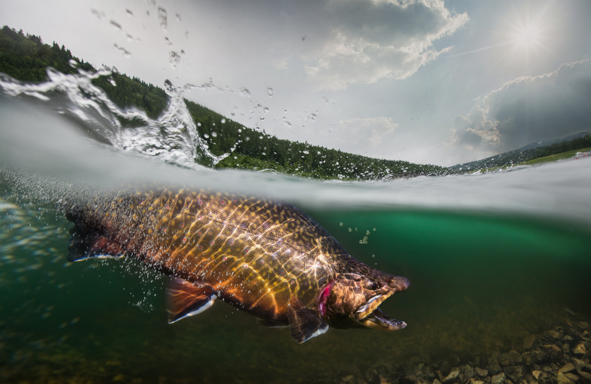
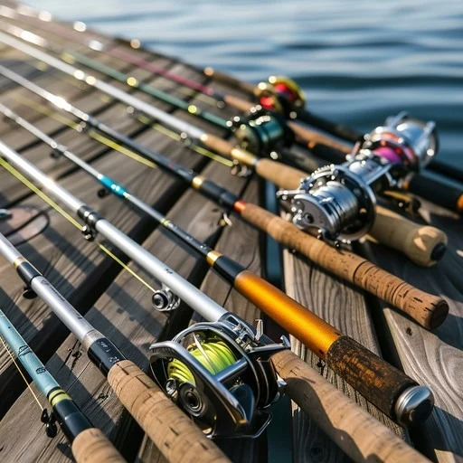
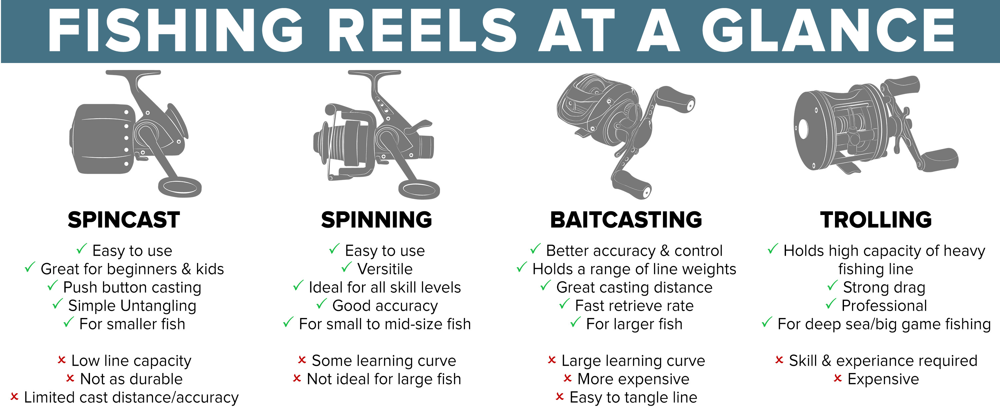

Fishing Techniques
Discover the best fishing techniques and the gear you'll need to make your next fishing trip a success. From fly fishing to spincasting, find everything you need here.
Rods and Reels
Fishing rods and reels come in a variety of types, each designed for specific techniques and fish species. Understanding their weight capacities and action types is crucial for success:
Types of Rod Powers
| Rod Power | Characteristics | Best For | Use Case |
|---|---|---|---|
| Ultra-Light (UL) | Flexible, lightweight | Small fish like trout | Ideal for light lures |
| Light (L) | Slightly stronger, flexible | Small to medium fish | Great for finesse fishing |
| Medium (M) | Balanced strength | Bass and Coho | Versatile for various lures |
| Medium-Heavy (MH) | Stronger, less flexible | Larger fish like Chum | Handles heavier lures |
| Heavy (H) | Stiff and powerful | Large fish like Chinook | Suitable for heavy tackle and cover |
| Extra-Heavy (XH) | Maximum strength | Big game fish like tuna | Handles the heaviest tackle |
When considering what rod you want to buy, it is best to decide what your target fish species is before purchasing. For a beginner setup is recommended to start off with a Ultra-Light or Light rod before pursuing larger fish.
Fly Fishing

Fly fishing involves casting lightweight artificial flies using a specialized rod and line. It's perfect for streams and rivers where finesse is key.
- Rod & Reel: Fly rod and reel.
- Line: Floating or sinking fly line.
- Accessories: Leaders, tippets, fly box, floatant.
Casting
Casting covers various sub-techniques, each with its unique approach. Typically if you are a beginner angler, it is recommended to avoid trolling reels due to the heavy upfront investment costs.
- Rod & Reel: Combinations of a large reel with a higher power rod, or small reel with lower power rod
- Line: Monofilament, Fluorocarbon, Braid fishing line. Recmmended to choose a line with a lower strength rating then the rod to prevent unintetional damage to the rod
- Accessories: Leaders, swivels, tackle boxes, fishing weights, lures, and bait.